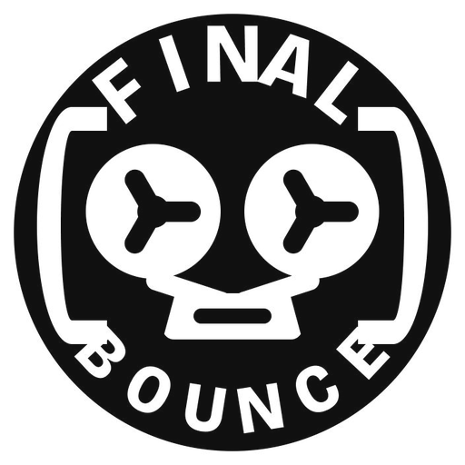

Fer à bande
Le fer à cheval devient un grand « U » protecteur. Les deux bobines restent immédiatement visibles, sans aucune mécanique secondaire.
La plus fidèle à l’ancien logo — et ma piste recommandée pour commencer.
Simplifier sans perdre l’esprit
Quatre pistes construites autour du magnétophone, des deux bobines et de l’idée de boucle. Chaque symbole est testé en grand, dans l’en-tête et à la taille d’un favicon.
Le logo du site n’est pas remplacé : cette page sert uniquement à choisir une direction.
Point de départ

04 pistes
Le fer à cheval devient un grand « U » protecteur. Les deux bobines restent immédiatement visibles, sans aucune mécanique secondaire.
La plus fidèle à l’ancien logo — et ma piste recommandée pour commencer.
La bande dessine une boucle basse, presque un sourire. Le symbole parle autant de rebond que d’enregistrement.
La plus vivante et accessible ; légèrement moins « studio » au premier regard.
Le châssis reste compact, mais les bobines deviennent de vraies bobines ajourées. La bande descend maintenant vers une tête de lecture centrale ; un seul voyant REC suggère la machine sans la surcharger.
Toujours brut et simple, mais désormais identifiable comme un magnétophone — pas comme une icône générique.
Un monogramme « FB » construit sur mesure. Les deux ouvertures du B deviennent les bobines ; la barre du F amorce la bande.
La plus identifiable comme marque ; le magnétophone devient volontairement plus discret.
Prochaine étape
Après ton choix, je travaillerai les proportions, le mot-symbole « Final Bounce », les variantes monochromes, le favicon et l’intégration réelle dans le site.
Revoir les quatre pistes ↑